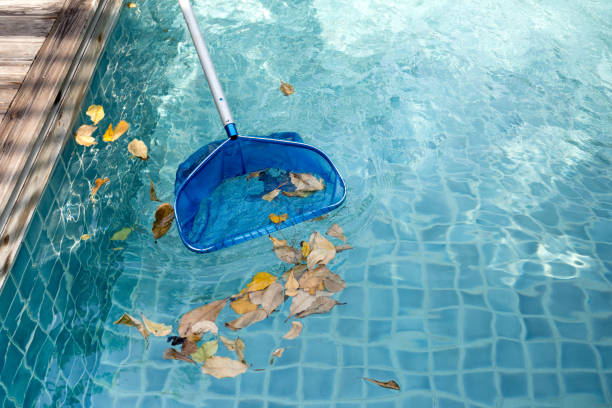

Trusted pool cleaning experts in Lindon Utah . Enjoy crystal-clear water with our debris removal, chemical balancing, and pool equipment inspection services for a stress-free swim.
Click Here To Call Us (877) 848-1711Maintaining a clean and safe pool in Lindon Utah can be challenging. Our professional pool cleaning services are designed to keep your pool sparkling year-round. We specialize in comprehensive services, including debris removal, algae treatment, water balancing, and equipment maintenance. With our expert team in Lindon Utah we ensure your pool stays healthy and inviting for your family and guests.
Our weekly pool maintenance covers everything from skimming the surface to vacuuming the bottom, leaving no corner untouched. We also offer advanced water testing and chemical balancing to prevent the growth of harmful bacteria and algae. Our filter cleaning services keep your pool’s filtration system running efficiently, ensuring crystal-clear water every swim.
Whether you own a saltwater or chlorine pool, we have the expertise to handle all types. Need a seasonal opening or closing? We’ve got you covered! Our tailored pool cleaning plans in Lindon Utah meet your specific needs, providing convenience and peace of mind.
Choose our pool cleaning company in Lindon Utah for unmatched reliability, affordability, and customer satisfaction. Let us handle the work while you enjoy a pristine, stress-free swimming experience. Contact us today for a free pool inspection and quote!
Residential & commercial Pool cleaning
Quality services at affordable prices
Immediate 24/ 7 emergency services


Maintaining a pristine pool in Lindon Utah requires regular cleaning to ensure it remains inviting and safe for swimming. At Spark Pool Cleaning, we recommend a consistent cleaning schedule tailored to your pool's specific needs.
For most pools, a weekly cleaning routine is essential to prevent debris buildup, algae growth, and chemical imbalances. During these sessions, our expert team removes leaves, skims the surface, and vacuums the pool floor to keep your water crystal clear. Regular maintenance not only enhances the aesthetics of your pool but also extends the lifespan of your equipment, reducing the risk of costly repairs.
In addition to weekly cleanings, we suggest performing a thorough check of the water’s chemical balance every few days. Properly balanced water prevents issues such as cloudy water, scaling, and corrosion, ensuring a healthier swimming environment. Spark Pool Cleaning offers comprehensive chemical testing and balancing services to complement our cleaning routine, providing you with peace of mind.
During peak swimming season or if your pool is used frequently, you might need to adjust the frequency of cleanings. High usage can lead to increased debris and faster changes in water chemistry. Our team in Lindon Utah is equipped to handle these demands, providing flexible service options to keep your pool in top condition.
Choose Spark Pool Cleaning for reliable, professional pool care in Lindon Utah . With our commitment to excellence, your pool will always be ready for enjoyment. Contact us today to set up your customized cleaning schedule and experience the difference of top-tier pool maintenance.
Residential & commercial Pool cleaning
Quality services at affordable prices
Immediate 24/ 7 emergency services
Algae can turn your once beautiful pool into a green nightmare within days. Our pool algae removal services in Lindon Utah target algae growth with precision and effectiveness. Utilizing environmentally friendly products, our experienced technicians will carry out an extensive cleaning process that not only eliminates existing algae but also treats the water to prevent future outbreaks. We aim to restore the water's clarity and ensure a safe swimming environment for you and your family.

Pools require ongoing maintenance and occasional repairs to ensure they remain in good working order and aesthetically pleasing. Our pool cleaning and repair services in Lindon Utah cover comprehensive pool care, combining expert cleaning with reliable repair solutions tailored to your needs.
Why choose us for pool cleaning and repair?
1. **Holistic Approach**: We provide an all-in-one solution, meaning you can rely on our technical expertise not only for cleaning but also for thorough inspections and repairs.
2. **Experienced Repair Technicians**: Our team is skilled in addressing a wide range of pool issues, from leak detections to equipment malfunctions, ensuring efficient and effective repairs.
3. **Preventive Maintenance**: By combining cleaning and repairs, we help prevent small issues from escalating into costly problems, helping you save time and money in the long run.
4. **Quality Parts and Materials**: When repairs are necessary, we use only high-quality parts that are durable and reliable, providing peace of mind for years to come.
5. **Customer Satisfaction Focus**: We aim to create long-lasting relationships with our clients and pride ourselves on delivering exceptional service that meets your satisfaction.
For comprehensive pool cleaning and repair services in Lindon Utah trust our team to give your pool the attention it deserves.

Emergencies can happen at any time, and when it comes to your pool, quick action can save you from larger issues down the road. Our emergency pool cleaning services are designed to rapidly respond to any urgent pool maintenance needs you may encounter, ensuring your pool stays safe and enjoyable.
Why choose our emergency services?
1. **Rapid Response Team**: Our dedicated team is available 24/7 to respond to your emergency pool cleaning needs, ensuring you are never left without immediate support.
2. **Comprehensive Assessments**: We quickly assess the issue, providing immediate solutions to clean and restore your pool, protecting it from further damage.
3. **Expert Solutions**: Our technicians have experience with a wide array of emergency situations, from storm debris clean-up to chemical imbalances.
4. **Quality Alone**: Even in emergencies, we prioritize quality service to ensure your pool's cleanliness and safety.
5. **Peace of Mind**: Knowing that help is just a call away allows you to relax, even in times of emergency.
When waiting isn’t an option, our emergency pool cleaning services in Lindon Utah are prepared to handle the unexpected efficiently and effectively.

Emergencies can happen at any time, and when they do, you need a pool cleaning service that responds quickly. Our emergency pool cleaning services are designed to provide immediate assistance for unexpected pool issues. Whether it's a sudden algae bloom, debris from a storm, or mechanical failure, our team is on-call, ready to restore your pool to its best condition swiftly. We understand the urgency and are committed to providing timely and effective solutions whenever you need them.

Sometimes, you simply need help fast. Our same-day pool cleaning services in Lindon Utah are designed for those moments when your pool isn’t looking its best and needs immediate attention. Our team is dedicated to providing efficient and thorough service without compromising quality. We aim to ensure your pool is ready for whatever occasion you have planned, be it a last-minute gathering, early summer barbeque, or spontaneous swim.
Everyone's pool has unique requirements based on size, location, and usage. That’s why our custom pool cleaning packages allow you to tailor services precisely to your needs. From monthly service to weekly upkeep, we can create a package that suits your schedule and budget. Our flexible options empower you to choose the level of maintenance you need, ensuring your pool remains clean and inviting without exceeding your limits.

Owning a pool requires ongoing maintenance, but it doesn’t have to be overly costly. Our affordable pool maintenance services are aimed at providing you with budget-friendly solutions that do not compromise the quality of care your pool deserves.
Why choose us for affordable maintenance?
1. **Transparent Pricing**: We offer clear pricing structures without hidden fees, ensuring you know precisely what services you are paying for.
2. **Flexible Options**: Choose from a range of maintenance services that fit your needs and budget; whether you require weekly cleanings or just occasional maintenance, we cater to you.
3. **Time-Saving Services**: Our affordable maintenance allows you to save both time and money, leaving you to enjoy your pool instead of worrying about its upkeep.
4. **Community Focus**: As a locally operated business ,，我们很自豪能够为社区提供可负担的服务，并根据客户的需求发展。
5. **客戶滿意度**: 我們的目標是確保滿意，因此每次服務後我們都會選擇跟進，為改善提供反饋。
通過我們在Lindon Utah 的可承受泳池維護服務，享受無憂的經濟實惠的泳池經驗。

Pool maintenance shouldn't be a financial burden. At Pool cleaning, we believe everyone should have access to affordable pool maintenance services . Our transparent pricing and diverse service plans allow you to select a maintenance package that fits your budget while ensuring optimal care for your pool. Balancing quality with affordability, we strive to deliver services that keep your pool in top shape without emptying your wallet. Enjoy a clean and well-maintained pool at a price you can afford!
Years Experience
Expert Technicians
Satisfied Clients
Compleate Projects
At Spark Pool Cleaning, we understand that a sparkling, pristine pool is more than just a luxury—it's an essential part of enjoying your home. That’s why we’re committed to offering unparalleled pool cleaning services across Lindon Utah . Our dedicated team combines expert knowledge with top-of-the-line equipment to ensure your pool remains in immaculate condition year-round.
Unmatched Expertise and Experience
With years of experience in the pool cleaning industry, Spark Pool Cleaning has become synonymous with reliability and excellence in Lindon Utah . Our certified technicians are trained in the latest cleaning techniques and use state-of-the-art tools to tackle even the toughest stains and debris. Whether it's routine maintenance or a deep clean, our team delivers consistent, high-quality results that exceed your expectations.
Comprehensive Pool Services
We offer a wide range of services tailored to meet the specific needs of your pool. From regular cleaning and water balancing to equipment inspections and repairs, Spark Pool Cleaning is your one-stop solution. Our attention to detail ensures that every aspect of your pool’s maintenance is handled efficiently, leaving you with more time to enjoy your sparkling clean water.
Customer-Centric Approach
At Spark Pool Cleaning, your satisfaction is our top priority. We pride ourselves on our transparent communication, reliable scheduling, and affordable pricing. Our friendly team works closely with you to understand your needs and provide customized solutions that fit your budget.
Choose Spark Pool Cleaning in Lindon Utah for a clean, beautiful pool that enhances your home’s enjoyment and value. Experience the difference that professional, dedicated service makes—contact us today!
Finding reliable and local pool cleaning services can sometimes feel like a daunting task. our team of experienced professionals offers comprehensive pool cleaning solutions tailored to meet your needs. With a focus on maintaining impeccable cleanliness, we utilize advanced techniques and eco-friendly products to ensure your pool water is crystal clear and inviting. Our local pool cleaners understand the unique climate and environmental conditions of Lindon Utah allowing us to effectively combat any challenges. Choose us for reliable service, punctuality, and outstanding customer support that will keep your pool sparkling clean year-round.
In today's world, ensuring your residential pool is clean and well-maintained is crucial for your family's enjoyment and safety. Our residential pool cleaning service in Lindon Utah offers thorough cleaning procedures that eliminate contaminants, debris, and algae, transforming your pool into a crystal-clear oasis. We understand that every homeowner has unique needs, which is why we provide customizable cleaning packages tailored to your specific requirements. With a focus on eco-friendly practices, our expert technicians ensure that your pool is not only clean but also healthy for your loved ones.
A commercial pool reflects the quality and care of your business. Our commercial pool cleaning services are designed to keep your facility looking its best while complying with health and safety standards. We understand that each commercial property has unique needs, which is why we offer customizable cleaning packages that can include regular maintenance, chemical balancing, filtration services, and emergency cleanings. By choosing our company, your commercial pool will not only look stunning but will also provide a safe environment for your clients and guests.
Keeping your pool clean shouldn’t break the bank. At Pool cleaning, we believe that quality pool cleaning services should be accessible to everyone. We offer affordable pool cleaning services without compromising on quality. Our transparent pricing and customizable service packages allow us to accommodate a variety of budgets and needs. With our diligent and professional approach, we ensure that you receive excellent value. Explore our budget-friendly solutions to maintain your pool’s cleanliness and enjoy savings.
Finding the best pool cleaning company can be a daunting task, but Pool cleaning stands out as a leader in the industry . Our commitment to customer satisfaction and excellence has earned us a reputation as one of the best pool cleaning companies in the region. Our experienced team is dedicated to providing effective solutions tailored to your specific pool needs. Whether you require regular maintenance or specialized services, we have the expertise and resources to keep your pool at its best. Choose quality; choose the best.
Your pool is an extension of your home, and it deserves care that reflects your lifestyle. Our professional pool cleaning services in Lindon Utah cater to homeowners and businesses alike, offering meticulous attention to detail and a commitment to excellence that ensures your pool remains a safe haven of relaxation and fun.
Here’s why you should choose our professional services:
1. **Trained and Certified Staff**: All our technicians undergo rigorous training and certification to ensure they can handle any pool type or size with expertise.
2. **Modern Equipment**: Equipped with the latest tools and technologies, our team can efficiently clean and maintain your pool, ensuring optimal performance.
3. **Customizable Services**: We recognize that every pool has unique needs. Our professional services can be tailored to fit your specific requirements, whether you need weekly cleanups or seasonal deep cleaning.
4. **Safety First**: We follow strict safety guidelines and procedures to ensure that your pool is clean and safe for you and your family or guests.
5. **Environmentally Friendly Practices**: Our methods focus on environmentally friendly products and procedures that protect not just your pool but our planet as well.
When you need a reliable partner for your pool's care, our professional cleaning services in Lindon Utah are your best choice for keeping your swimming space immaculate.
When it comes to professional pool cleaning services, our team stands out in Lindon Utah . We are dedicated to providing exceptional cleaning solutions tailored to both residential and commercial clients. Our professionals are certified, trained, and fully insured, utilizing the latest equipment and cleaning agents to ensure your pool is pristine and safe. With our keen eye for detail and commitment to excellence, you can trust us to maintain your pool to the highest standards, providing you with peace of mind.
When it comes to pool maintenance, hiring local pool cleaners ensures that you receive reliable and timely services. Our local team understands the specific weather conditions and challenges unique to your area, allowing us to provide tailored services that keep your pool in pristine condition.
Here’s why choosing local pool cleaners helps you:
1. **Quick Response Times**: Being local means we can quickly respond to your cleaning needs, including same-day services for emergencies.
2. **Community Knowledge**: Our understanding of the local environment allows us to develop cleaning solutions that are specifically effective for the water conditions .
3. **Personalized Service**: Our local technicians build relationships with each client, enabling us to offer personalized service that meets your specific expectations and needs.
4. **Affordable Options**: We pride ourselves on offering competitive prices, helping you save money while receiving top-quality service from your neighborhood professionals.
5. **Commitment to Excellence**: We are deeply invested in our community and strive to uphold our great reputation with exceptional service, ensuring that our clients love their pools again.
Trust our local pool cleaning experts in Lindon Utah to provide the best care for your pool while you enjoy everything it has to offer.
Searching for local pool cleaners near me? Look no further! We are your trusted neighborhood pool cleaning experts committed to delivering high-quality services right in your backyard. Our team understands the unique challenges posed by local climates and pool types, enabling us to tailor our services to meet your specific needs. Local service means quick response times, personalized attention, and knowledge of the best cleaning practices for your area. Let us help you keep your pool clean and inviting for all your summer gatherings.
A well-functioning pool filter is crucial for maintaining clean and clear water. Our pool filter cleaning services in Lindon Utah ensure that debris doesn't clog your filtration system, leading to less efficient performance and potential damage. Our trained professionals utilize specialized equipment and techniques to effectively clean and maintain your filters, allowing your pool's circulation system to function optimally. Regular filter cleaning is a key part of pool maintenance, and we are here to help you with that.
Maintaining the proper chemical balance in your pool is vital for achieving a safe and enjoyable swimming environment. Our chemical pool cleaning services in Lindon Utah emphasize precision and safety, ensuring your water remains clean, clear, and healthy for you and your family.
Why our chemical cleaning services are essential:
1. **Expert Assessment**: Our trained technicians will perform a comprehensive water test to assess its chemical balance, identifying any necessary adjustments to maintain optimal water quality.
2. **Safe Chemicals**: We only use high-quality and safe products that ensure cleanliness without putting your family or pets at risk.
3. **Regular Monitoring**: Our service ensures regular monitoring of chemical levels, so you don't have to worry about adjusting chemicals after every rain or pool party.
4. **Customized Solutions**: Different pools have different needs, so we create tailored chemical cleaning solutions based on the size of your pool and its usage.
5. **Long-term Protection**: Maintaining a balanced chemical composition protects your pool surfaces, prevents algae growth, and prolongs the lifespan of your pool equipment.
Trust us for professional chemical cleaning services and let's work together to create an immaculate swimming experience.
Are you tired of juggling multiple pool maintenance tasks? Our full-service pool cleaning offers a one-stop solution for homeowners and commercial properties that require comprehensive pool care. We take away the stress of managing your pool maintenance, allowing you to spend more time enjoying your pool.
Here is what full-service cleaning encompasses:
1. **Thorough Cleaning**: We cover all aspects of cleaning, including skimming, vacuuming, brushing, and filter cleaning, ensuring your pool is spotless.
2. **Chemical Balancing**: We test and adjust the pool water chemistry to ensure it’s safe for swimming, protecting against harmful bacteria and algae blooms.
3. **Equipment Maintenance**: Our technicians inspect and maintain all essential pool equipment, guaranteeing everything works correctly and efficiently.
4. **Year-Round Care**: Whether it’s summer or winter, our team is available to provide ongoing maintenance to protect your pool and keep it in perfect condition throughout the year.
5. **Peace of Mind**: You can enjoy your pool knowing that experts are managing its care with professionalism and attention to detail.
Choose our full-service pool cleaning for an unparalleled experience that frees you from the burden of pool maintenance.
For pool owners seeking a hassle-free experience, our full-service pool cleaning is the perfect solution. we offer comprehensive cleaning packages that include everything from skimming and vacuuming to chemical testing and tile cleaning. Our knowledgeable staff are equipped to handle all aspects of pool maintenance, ensuring your pool remains in optimal condition year-round. With our reliable and thorough services, you can spend more time enjoying your pool instead of cleaning it.
At Pool cleaning, our swimming pool cleaning services are designed to rejuvenate your pool experience. Our trained professionals utilize advanced cleaning techniques and equipment to ensure your pool is spotless and safe for use. We offer a range of services from regular cleanings to deep cleans that remove stubborn stains and algae. With a commitment to excellence and customer satisfaction, we aim to exceed your expectations, ensuring you enjoy every moment spent in your pool.
When searching for pool cleaning companies near you, it’s essential to find one that is reliable and offers quality services. Our company is your go-to option in Lindon Utah known for our exceptional service and customer-friendly approach. We offer a wide range of pool cleaning solutions tailored to fit your needs and budget. Our skilled technicians are experienced in handling various types of pools and materials, ensuring the best possible care for your investment.
Homeowners deserve a sparkling clean pool, and that's exactly what Pool cleaning provides with our specialized pool cleaning for homes . Our extensive home pool cleaning services cover everything from surface cleaning and debris removal to deep cleaning and maintenance checks. We understand that each pool is unique, and we tailor our services to suit your specific needs. When you choose us, you are investing in quality service that keeps your home pool safe and enjoyable year-round.
Grimy tiles can detract from the beauty of your pool. That’s why Pool cleaning offers specialized pool tile cleaning services . Our expert technicians use effective techniques to remove calcium buildup and stains that accumulate over time. We emphasize the importance of keeping your pool tiles clean not only for aesthetics but also for functionality, as buildup can affect water circulation. Trust us to restore the gleam to your pool tiles and enhance your swimming area.
Preventing algae growth in your pool is crucial to maintaining clean and clear water, and it’s a common concern for pool owners in Lindon Utah . At Spark Pool Cleaning, we recommend a proactive approach to keeping algae at bay, ensuring your pool is always ready for a refreshing swim.
The first and most important step is maintaining the right chemical balance. Algae thrive in pools where chlorine levels are too low. Regularly check and adjust your pool's chlorine, pH, and alkalinity levels to ensure they remain within the ideal range. We recommend testing the water at least twice a week, especially during the hot summer months in Lindon Utah . Proper water balance creates an environment where algae cannot grow.
Circulation is another key factor. Ensure your pool’s pump and filtration system are running efficiently. Stagnant water becomes a breeding ground for algae. Running the pool pump for 8-12 hours daily helps circulate chemicals evenly and prevents algae spores from settling. Additionally, brushing the pool walls and floor weekly helps remove any algae spores that might be clinging to surfaces.
Lastly, regular shock treatments provide an extra boost to your pool's defense system. Shock your pool at least once a month or after heavy use. Spark Pool Cleaning offers expert services in Lindon Utah to handle all aspects of algae prevention, from water testing to thorough cleaning. Trust our team to keep your pool algae-free, so you can enjoy crystal-clear water throughout the year.
Lindon is a city in Utah County, Utah, United States. It is part of the Provo–Orem, Utah Metropolitan Statistical Area. The population was 10,070 at the 2010 census. In July 2019 it was estimated to be to 11,100 by the US Census Bureau.
Yes, we offer one-time cleaning services for special occasions or when your pool needs an extra deep clean .
We recommend weekly or bi-weekly pool cleaning services to ensure a clean, healthy pool in Lindon Utah .
Our expertise, reliable service, and commitment to customer satisfaction make Spark Pool Cleaning the top choice .
Yes, we offer pool inspections to ensure the pool is in good condition before you purchase a home .
Cloudy water, excessive algae, or an unpleasant odor are signs that your pool needs a deep clean .
We use high-quality, safe chemicals to balance your pool water and ensure it remains clear and healthy .
Yes, we specialize in green pool cleanup, restoring your pool to crystal-clear condition .
We service filters, pumps, heaters, and chlorinators to ensure your pool equipment functions properly in Lindon Utah .
A typical pool cleaning service takes 1-2 hours, depending on the size and condition of the pool .
Yes, we offer minor repairs for pool equipment like filters and pumps. For larger repairs, we partner with trusted technicians .
Backwashing your filter should be done once a week or as needed to ensure proper water flow in your Lindon Utah pool.
Regular cleaning, proper chemical levels, and good circulation are key to preventing algae in pools .
Yes, chemical balancing is included in our pool cleaning services to ensure safe and clean water .
Spark Pool Cleaning offers regular cleaning, chemical balancing, filter cleaning, and equipment maintenance services .
Yes, we provide pool closing and winterizing services to protect your pool during colder months .
The cost depends on the size of the pool and the level of service. Contact Spark Pool Cleaning for a free estimate in Lindon Utah .
Yes, we offer pool draining and refilling services when necessary in Lindon Utah .
Regular pool cleaning includes skimming, brushing, vacuuming, chemical balancing, and filter cleaning .
Yes, we offer pool opening services at the start of the season to ensure your pool is ready for use .
Yes, we offer stain removal services to restore the look of your pool's surfaces .
Yes, Spark Pool Cleaning provides services for both residential and commercial pools in Lindon Utah .
Yes, Spark Pool Cleaning offers winter pool maintenance services to ensure your pool stays clean during the off-season in Lindon Utah .
Pool filters typically need to be changed every 3-5 years, depending on usage and water quality .
Yes, we offer emergency pool cleaning services if you need immediate help with your pool in Lindon Utah .
Professional pool cleaning ensures proper chemical balance, extends equipment life, and keeps your pool safe and enjoyable .
Regular cleaning, proper filtration, and balanced chemicals are key to preventing cloudy water .
We use specialized treatments and shock to eliminate algae and restore water clarity .
Yes, we provide cleaning and maintenance services for both chlorine and saltwater pools .
You can easily schedule a service by contacting us online or by phone for all pool cleaning needs .
We clean and inspect filters as part of our maintenance services to ensure proper water circulation and cleanliness .
We’ve been very impressed with Spark Pool Cleaning. Their service is consistently excellent, and our pool in Lindon Utah always looks great. They are the best choice for pool cleaning!
Profession
Spark Pool Cleaning provides excellent service. Their team is professional, efficient, and always delivers great results. Our pool in Lindon Utah is always clean and well-maintained!
Profession
Spark Pool Cleaning has transformed our pool maintenance experience in Lindon Utah . Their team is reliable, professional, and always goes the extra mile. Our pool has never looked better. Highly recommended!
Profession